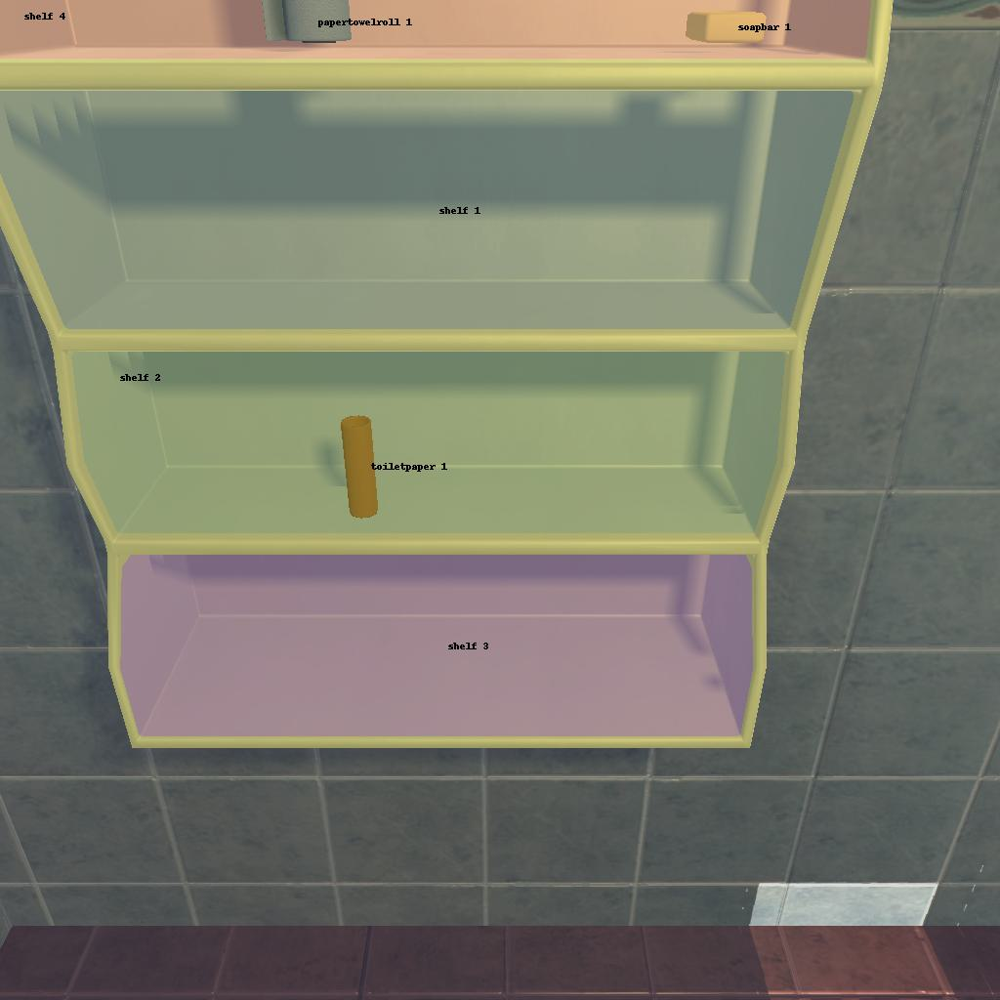

---------------------------------------------------------task: 25---------------------------------------------------------
--------------------------------------------------------------------------------------------------------------------------------------------------------------------
--------------------------------------------------------------------------------------------------------------------------------------------------------------------
Step:--------------------------------------------------------------------------7-------------------------------------------------------------------------------
----------------------------------------
VLM Prompt:
Image1:
Image2:
**Instruction**
1. Analyze the provided image to identify all visible household objects, focusing on those relevant to the task description "put two dishsponge in cart."
2. Use the analysis of the image and the task hint "The agent must find an object of the desired type, pick it up, find the correct location to place it, put it down there, then look for another object of the desired type, pick it up, return to previous location, and put it down there with the other object." to answer the question: what is the most reasonable action in the choices for the task description "put two dishsponge in cart"?
4. Decide and write the answer using the template: The answer is: (i): , where i is the real number. If there is no desired object in the image, search every place based on **Initial Observation** to find the object. And if no one is exactly correct, choose a similar answer.
**Initial Observation**
You are in the middle of a room. Looking quickly around you, you can see bathtub (1), bathtubbasin (1), cart (1), toilet (1), garbagecan (1), toiletpaperhanger (1), shelf (1-4), sink (1), sinkbasin (1), handtowelholder (1)
**Answer Choices**
(1): go to bathtub 1
(2): go to bathtubbasin 1
(3): go to cart 1
(4): go to toilet 1
(5): go to garbagecan 1
(6): go to toiletpaperhanger 1
(7): go to shelf 4
(8): go to sink 1
(9): go to sinkbasin 1
(10): go to handtowelholder 1
(11): take papertowelroll 1 from shelf 3
(12): take toiletpaper 1 from shelf 3
(13): take soapbar 1 from shelf 3
(14): examine shelf 3
**Answer**
Let's think step by step by following the instructions.
----------------------------------------
----------------------------------------
Original Response:
First, we need to identify if there are any dish sponges visible in the provided images. In Image 1, we see a papertowelroll and a soapbar on shelf 4, and in Image 2, we see a toiletpaper on shelf 2. There are no dish sponges visible in either of the images.
Next, following the task hint, we need to find an object of the desired type, which is a dish sponge. Since we do not see any dish sponges in the images provided, we must search every place based on the Initial Observation to find the object.
Based on the Initial Observation, the most reasonable action to find a dish sponge would be to go to the location where dish sponges are most likely to be found. In a typical household setting, dish sponges could be found near the sink or sink basin where dishes are washed.
Therefore, the most reasonable action from the answer choices, considering the task description "put two dishsponge in cart," would be to go to the sink or sink basin to search for a dish sponge.
The answer is: (8): go to sink 1, or (9): go to sinkbasin 1. Since we need to choose one, we will go with the sink as it is the primary location where dish sponges are usually stored.
The answer is: (8): go to sink 1.
----------------------------------------
----------------------------------------
>>> Refine Original VLM Response and Get Pure Action: go to sink 1, or (9): go to sinkbasin 1
----------------------------------------
-----------------------------------------------------------------
Running time: 19.033133506774902 seconds
Total Money: 12.445780000000003
-----------------------------------------------------------------
-----------------------------------------------------------------
Text Observation:Nothing happens.
-----------------------------------------------------------------
UNSUCCEED